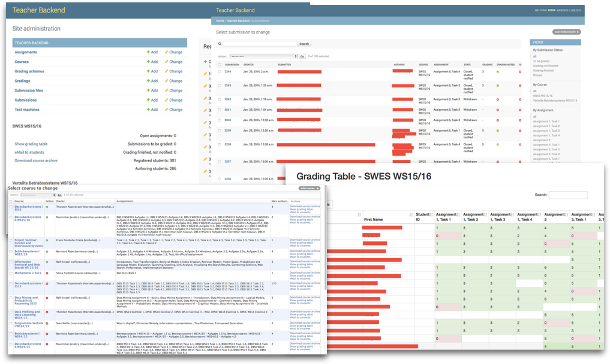

Welcome!¶
This is OpenSubmit, a small web application for managing student assignment solutions in a university environment.
Other tools, such as Moodle, are more powerful and support not only assignments, but also the management of learning material, course progress and access rights. If you want the all-inclusive solution, this is the wrong project.
OpenSubmit offers a trivial web page were students can login and submit their assignment solutions.

Teachers and their helping tutors use the backend interface to manage assignments, deadlines, and the gradings. Students are informed about the progress of their correction and their final grade through email and the frontend page.
The unique capability of OpenSubmit is the support for automatically validated assignments. The most common use case are programming assignments were students hand-in their source code archive. These archives are downloaded by an executor daemon and checked with a validation script that is written by the teachers.

The testing can happen before and after the deadline. Test results before the deadline are shown to the students. This makes the life of the corrector less miserable, because after the deadline, all gradable solutions are ‘valid’. Students also seem to like the idea of having a validated solution, so that they do not fail due to technical difficulties at the correctors side.
When the deadline is over, the system can run another invisible test with the student code the determine grading-relevant information.
Since OpenSubmit is only for assignment submission, it has no elaborated management of course participants. Everybody who can perform a successful login can submit solutions.
Authentication is expected to be done with your university identity provider. For that reason, we support several authentication methods and LTI integration, but not a password-based login.